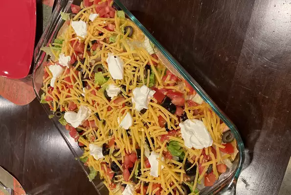

Taco Bake Casserole

Description
This quick and easy taco bake will satisfy even the most picky eaters. You
can modify it to add things you love. It's yummy and so easy to make! Top
with tomatoes, lettuce, salsa or whatever you like on your Mexican food.
Ingredients
1 package Taco Seasoning Mix
1 Can Sliced Black Olives
1 can Diced Green chilies
2 Cups shredded Cheddar cheese
Steps
Preheat oven to 375 degrees F (190 degrees C). Spray a 9x13-inch baking
pan with cooking spray.
Cook ground beef and onions in a skillet over medium heat until beef is
browned, 7 to 10 minutes; drain grease. Stir in water and taco seasoning;
cook, stirring often, until thickened, about 2 minutes. Add refried beans,
salsa, olives, and green chiles. Cook and stir over low heat until
ingredients are warmed through, 3 to 4 minutes.
Place half of the taco shells in the bottom of the baking dish. Pour in
half of the ground beef mixture; sprinkle with half of the Cheddar cheese.
Repeat with remaining taco shells, ground beef mixture, and Cheddar
cheese.
Bake in the preheated oven until cheese is melted and bubbly, 20 to 25
minutes.